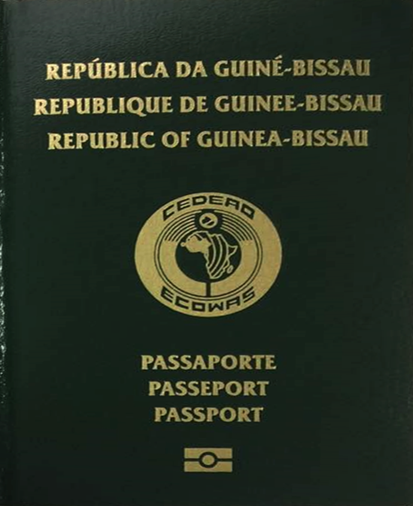
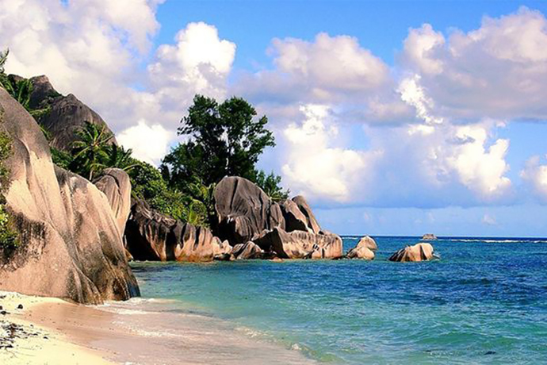

项目优势：
最短时间、最低成本获得国外身份
可自由出入澳门
非CRS协议国
所需资料简单，一个月便可取得护照
免签国家：
诺福群岛、澳门、密克罗尼西亚、泰国、马绍尔群岛、韩国、帕劳共和国、菲律宾、库克群岛、文莱、新克里多尼亚、新加坡、西萨摩亚、马来西亚、瓦努阿图、马尔代夫、汤加王国、塞浦路斯、所罗门群岛、尼泊尔、图瓦卢、柬埔寨、基里巴斯、不丹王国、斐济群岛、牙买加、埃及、多米尼克、突尼西亚、开曼群岛、博茨瓦纳、圣吉斯尼维斯、马拉威、圣文森、坦桑尼亚、安提瓜和巴布达、吉布提、格林纳达、南非、圭亚内、斯威士兰、巴哈马、塞舌尔、百慕大、肯尼亚、圣露西亚、莱索托、特立尼达和多巴哥、津巴布韦、 荷兰属安地列斯、塞拉利昂、蒙特塞拉特、毛里求斯、列华群岛、 赞比亚、巴巴多斯、 巴拿马、保加利亚、伯利兹、 拉脱维亚、英属维尔京群岛。

政策解读：
几内亚比绍政府开放并欢迎海外公民的对几内亚比绍的投资与居留。几内亚比绍护照项目是几内亚比绍政府官方支持的项目。
申请条件：
5万美金律师费
无犯罪记录及不良入境记录
办理流程：
签约受理准备申请材料
律师申请送件至政府
政府审核
获得护照
签证样本：

国家概述：
几内亚比绍共和国是位于北大西洋岸的西非国家，首都是。几内亚比绍曾是葡萄牙殖民地，1446年至1974年9月10日这段期间的名称是葡属几内亚。几内亚比绍属热带海洋性季风气候，通常炎热潮湿。6月到11月是季风型雨季，吹西南风。12月到5月是旱季，吹东北哈马丹风，与中国时差8小时。几内亚比绍并没有加入CRS，不会与中国互通两国公民的财务资产信息。几内亚比绍护照可免签全球61个国家，包括澳门。
